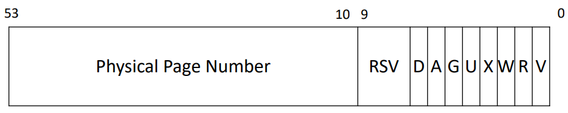

在本 lab 中，我们将进行页表机制的探索。
Preparation
切换到对应分支
1 | $ git fetch |
Task1: Speed up system calls
该任务要求我们在进程虚拟地址空间中添加一个固定项：USYSCALL，该页的开头字段为当前进程
pid，这样一来 getpid()
就不用陷入内核，而是直接通过访问虚拟地址即可获取，从而加快速度。
用户层函数 ugetpid()
已经为我们实现好了，我们只需要关注内核中，更具体来讲，是新建进程时初始化虚拟地址空间动作中发生的事。
进程会在两个时候被创建，一个是
userinit()(kernel/proc.c)时，一个是调用
fork() 时。进程的创建会调用 kernel/proc.c 中的
allocproc()，然后通过 proc_pagetable()
来初始化页表。
我们要做的很简单。
第一步，在页表初始化时加入一个 {USYSCALL => PHYPAGE}
的 PTE。USYSCALL 在 kernel/memlayout.h
中定义（就是 TRAPFRAME 的前一页），而 PHYPAGE
则需要我们调用 kalloc()(kernel/kalloc.c)
进行空闲页分配。
第二步，也就是正确完成页表初始化后，将 pid 写入
PHYPAGE。
#ifdef LAB_PGTBL是灰的不要紧，make时会自动帮我们 define。
PHYPAGE 的分配操作只能在 allocproc()
中进行，因为一旦分配失败，我们需要释放当前进程。为了让同一
PHYPAGE 能被 proc_pagetable() 访问，我在
struct proc 中添加了 usyscall
字段（这些都是参考了 trapframe 的初始化流程）。
1 | static struct proc* |
添加 PTE 的操作很简单，页表相关操作都在 kernel/vm.c
中，我们需要关注 mempages() 函数，该函数就是为指定页表添加
PTE。唯一需要关注的就是符号控制位，根据我们的需求，该页面为只读型，而且能被用户层函数访问，那么只赋予
PTE_R|PTE_U 即可。有效位会在 mappages()
内部添加，无需操心。
如果添加失败，需要把已经添加的表项清空，并且释放页表，参考上面的代码即可。
1 | pagetable_t |
当然，不仅要考虑分配，还要考虑释放的操作。如果到这一步就急匆匆地
make qemu; ./pgtbltest，那你马上就会得到一个
panic: freewalk leaf。这是因为我们没有在清空页表时清空我们已分配的
PHYPAGE，而这一步在 freeproc()
函数中实现。
1 | static void |
当然还要关注页表对应页的释放操作，proc_freepagetable()(kernel/proc.c)
的注释讲的很清楚：Free a process's page table, and free the
physical memory it refers to. 并且它也给了提示：要调用
uvmunmap()。所以新增一行即可，实际的释放操作会在
uvmunmap() 中完成：
1 | void |
Task2: Print a page table
现在我们需要按照给定格式，在 kernel/exec.c:119 插入
if(p->pid==1) vmprint(p->pagetable)
来输出初始进程的页表，以可视化并有助于 debug。
参考 kernel/vm.c 中的
freewalk()，我们主要关注的是它以怎样的方式遍历页目录结构——获取表项，得到物理地址，根据标志位判断这一物理地址是页表还是数据页，决定是否需要进一步深入。
在 xv6 中，每个页表项的低位为标志位，如下图所示：

kernel/riscv.h中已经为我们定义好了若干标志位，直接使用即可。
1 | void |
不难发现，判断的条件就是
(pte & PTE_V) && (pte & (PTE_R|PTE_W|PTE_X) == 0，PTE_V
位意味着该页表项中的物理地址是已分配的，PTE_R|PTE_W|PTE_X
意味着这一物理地址对应的是页表，而非数据项。
此外，我们还需要根据当前页表的 level 来打印，毕竟 level 越低，前面的
.. 越多，所以还需要一个额外的 vmprintwalk()
函数。
那么先在 kernel/def.h 中添加函数签名，然后修改
kernel/exec.c，最后就是在 kernel/vm.c
下加入两个函数的代码了。
1 | void |
Task3: Detecting which pages have been accessed
该任务要求我们利用跟踪哪些页被访问过，并且通过用户层函数
pgaccess() 来获取自从上一次调用以来被访问过的页。
既然如此，那每个页表项就需要一个“访问位”咯，根据上面那张图，我们可以在
kernel/riscv.h 中添加一行
#define PTE_A (1L << 6)，方便进行位运算。
lab 已经贴心地为我们做好了所有准备工作，包括修改
usys.pl、注册系统调用等，所以我们只需要在
kernel/sysproc.c 中实现 sys_pgaccess()
函数即可。
查看 user/user.h 中 pgaccess()
的函数签名我们发现，我们需要接收三个参数，分别是一个虚拟地址
vba，一个整型 npages，和一个指针
vp，用 argaddr() 与 argint()
处理得到参数后，检查一下地址是否越界——pgaccess 的作用是追踪
vba 开始 npages
个页面的被访问情况，那么最大的地址一定不能超过
MAXVA，否则直接返回 -1。
然后根据得到的基地址，逐页查页表，检查指向数据页的那个页表项的
PTE_A 位，如果为 1，则将 vp 指针指向内存的第
i 个 bit 置
1。这就是一个简单的检查某页是否被访问过的流程。
根据
sys_sysinfo()的知识，这里必须用copyout()拷贝数据到vp指向的内存。
那么如何根据页表找到最终的页表项呢？kernel/vm.c
中为我们提供了 walk() 的
API，它根据虚拟地址，返回指向数据页的那个页表项的指针。还有一个叫
walkaddr()
的，是直接返回物理页的起始地址，后面有用，这里暂时用不到。
1 | int |
现在还有一个问题，PTE_A 位是我们新增的，也就是说 lab
并没有实现在什么地方将其置
1，就需要我们找一个合适的位置去置位，不然
*pte & PTE_A 将毫无意义。
前面提到的 walkaddr()
可以解决该问题。毕竟每次访问物理页的时候必然要经过这个调用，它返回的物理页起始地址，那肯定是要有人去访问的——就算没人访页，那也视为去访问了——所以，u
know，在返回前置位即可。毕竟，这是访问物理页的唯一通道。
如果加在
walk()里，那么sys_pgaccess()检查的每一页，都会因为调用了walk()而置PTE_A=1，这肯定是不行的。
1 | uint64 |
测试结果
1 | $ make grade |
最后的工作
git commit -am ""将所有修改提交到本地;- 执行
make handin。由于 lab0 保存了 APIKey，故直接成功提交；
可选的挑战再说吧，没有什么想做的欲望。